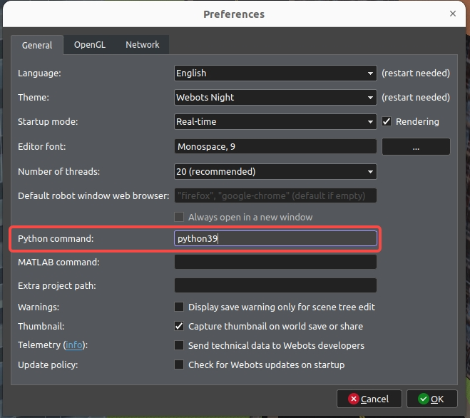

安装
Linux系统(Ubuntu22.04)以及Windows系统下的工程安装指引
Linux(Ubuntu22.04)
Ubuntu22.04是由于我们使用的仿真引擎webots2023b适配的Linux系统版本为Ubuntu22.04
如果安装了其他版本的Linux系统，可以参考 webots的代码仓库下载配置合适的版本
Step1 安装webots仿真软件
从 webots 下载webots2023b版本软件(例如：
webots-R2023b-x86-64.tar.bz2)和资产文件(assets-R2023b.zip)，可以用如下命令解压和安装webots解压与安装
## unpack sudo tar -jxvf webots-R2023b-x86-64.tar.bz2 -C /opt ## config gedit ~/.bashrc export LD_LIBRARY_PATH=$LD_LIBRARY_PATH:/opt/webots/lib/webots ## run cd /opt/webot/bin ./webots-binassets解压
cp ~/Downloads/assets-R2023b.zip ~/.cache/Cyberbotics/Webots/assets/ ## unzip cd ~/.cache/Cyberbotics/Webots/assets/ unzip ./assets-R2023b.zip
Step2 创建虚拟环境与库安装
虚拟环境创建
conda create -n uav_follow39 python=3.9 conda activate uav_follow39算法端
## Alg requirements pip install torch==2.2.0 torchvision==0.17.0 torchaudio==2.2.0 --index-url https://download.pytorch.org/whl/cu121 pip install opencv-python==4.9.0.80 pip install gym==0.25.1 pip install setproctitle==1.3.3 pip install tensorboard pip install tqdm pip install stable-baselines3==2.3.0 pip install sb3_contrib==2.3.0 pip install gymnasium==0.29.1 pip install wandb==0.17.6仿真器端
## Simulator requirements sudo apt-get install libeigen3-dev sudo apt-get install nlohmann-json3-dev sudo apt install sumo sumo-tools sumo-doc pip install lxml pyproj shapely webcolors configparser --user pip install transform3d ## config gedit ~/.bashrc # Change dir according to your installation export SUMO_HOME=/usr/share/sumo export WEBOTS_HOME=/opt/webots
Step3 修改webots运行python环境
由于我们使用的环境与webots本身默认的python环境不相同，因此需要为我们新的环境创建软链接并进行配置
ln -s /root/miniconda3/envs/uav_follow_alg39/bin/python3.9 /usr/bin/python39接着进入webots软件，选择
Tools->Preferences, 按照如下图将选项Python command进行修改：
Python command配置

Windows
Step1 安装webots仿真软件
从 webots 下载webots2023b版本安装器(
.exe文件)和资产文件(assets-R2023b.zip)。将资产复制到指定路径：
C:/Users/<USER>/AppData/Local/Cyberbotics/Webots/cache/assets接着打开webots，如果新用户在tour guide阶段能正常显示环境，则说明安装完成。
Step2 创建虚拟环境与库安装
虚拟环境创建
conda create -n uav_follow39 python=3.9 conda activate uav_follow39算法端
## Alg requirements pip install torch==2.2.0 torchvision==0.17.0 torchaudio==2.2.0 --index-url https://download.pytorch.org/whl/cu121 pip install opencv-python==4.9.0.80 pip install gym==0.25.1 pip install setproctitle==1.3.3 pip install tensorboard pip install tqdm pip install stable-baselines3==2.3.0 pip install sb3_contrib==2.3.0 pip install gymnasium==0.29.1 pip install wandb==0.17.6仿真器端
1. python库安装## Simulator requirements conda activate uav_follow39 pip install lxml pyproj shapely webcolors configparser --user pip install transform3d2.Eigen3库安装To Do：补充eigen库的编译过程
首先在 eigen 官网下在最新版本的
Eigen3库3.nlohmann-json3库安装To Do：补充nlohmann-json3库的编译过程
首先在 nlohmann-json3 官方仓库下载
nlohmann-json3库4. webots的makefile配置makefile文件路径为Webots_Simulation/traffic_project/controllers/drone_ctrl2/Makefile由于linux系统一般不需要设置包含路径，因此做了windows系统的判断，如果是windows系统需要手动修改drone_ctrl2控制器的makefile，添加eigen以及nlohmann_json的包含路径
配置完之后需要重新编译吧？null := space := $(null) $(null) WEBOTS_HOME_PATH?=$(subst $(space),\ ,$(strip $(subst \,/,$(WEBOTS_HOME)))) ifeq ($(OS),Windows_NT) INCLUDE += -I D:/cppLibrary/include/Eigen3/include/eigen3 INCLUDE += -I D:/cppLibrary/include/nlohmann_json/include endif include $(WEBOTS_HOME_PATH)/resources/Makefile.include
其中，
INCLUDE += -I D:/cppLibrary/include/Eigen3/include/eigen3需要配置成Eigen3库的路径
INCLUDE += -I D:/cppLibrary/include/nlohmann_json/include需要配置成nlohmann-json3库的路径5. 安装sumo
按照文档 sumo-interface.md 进行安装即可
6.To Do：补充环境变量配置图文webots和sumo环境变量配置
Step3 修改webots运行python环境
To Do：Finish Windows Version ConfigurationLinux系统下通过添加软链接的方式解决，而在Windows下直接将运行路径插入webots中
To Do：补充环境变量配置图文